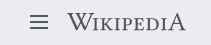
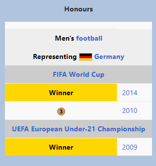

Mesut Özil

Özil in 2019
Personal information
Full Name:Mesut Özil
Date of birth: 15 October 1988 (age 33)
Place of birth: Gelsenkirchen, West Germany
Height: 1.80 m (5 ft 11 in)
Position(s):Attacking midfielder
Club information
Current Team:IBFK
Number10

*Club domestic league appearances and goals, correct as of 21 August 2022
Mesut Özil (German pronunciation: [ˈmeːzut ˈøːzil], Turkish: [meˈsut œˈzil]; born 15 October 1988) is a German
professional footballer who plays as an attacking midfielder for Süper Lig club İstanbul Başakşehir. Özil is
known for his technical skills, creativity, passing skills, and vision.[4] He can also play as a wide midfielder.
Born and raised in Gelsenkirchen, Özil began his senior club career playing for hometown club Schalke 04, before
signing with Werder Bremen in 2008, aged 19. After winning the DFB-Pokal in his first season, his individual
performances led to a move to Real Madrid in 2010.[5] There, he helped the club win a La Liga title, and ranked
first in league assists for three straight seasons.[6] In 2013, Özil was the subject of a then-club record
association football transfer when he signed for Arsenal in a transfer worth up to £42.5 million (€50 million),
becoming the most expensive German player ever at the time. In England, he won three FA Cups and helped end
Arsenal's nine-year trophy drought, while recording the second most assists ever (19) in a Premier League
season. In 2021, Özil joined Fenerbahçe on a free transfer;[7] after his contract with the club was terminated
in 2022, he signed with İstanbul Başakşehir.
A German international, Özil holds the record for the most German Player of the
Year awards (5). He made his senior debut for the Germany national team in 2009 at age 20, and appeared
in five major tournaments. He was the top assist provider at the 2010 FIFA World Cup and UEFA Euro 2012, where
he helped Germany twice reach the semi-final. Özil helped Germany win the 2014 FIFA World Cup, but retired from
international competition in 2018, alleging discrimination and disrespect by the German Football Association (DFB) and
the German media.
Early Life
Özil[8] was born on 15 October 1988[9] in Gelsenkirchen, North Rhine-Westphalia, as a son of
Turkish immigrants.[10] His grandfather moved as a Gastarbeiter from Zonguldak, Turkey to
Germany.[11] He played, at youth level, for various clubs in Gelsenkirchen during 1995~2000, before a
five-year stint for Rot-Weiss Essen.[citation needed]
Club Career
Schalke 04
In 2005, Özil moved to the youth system of Schalke 04. He was deployed a midfielder and wore 17 as his squad
number, after starting as a playmaker and central attacking midfielder in the place of the suspended Lincoln
in DFL-Ligapokal matches against Bayer Leverkusen and Bayern Munich.[12] Upon making the first team at
Schalke, he was described as "the next big thing". However, soon after declining an offer from Schalke 04,
claiming that a yearly salary of €1.5 million would not be enough, he eventually fell out with club
management and moved on to Werder Bremen in January 2008.[13] This led to Mirko Slomka, the then-Schalke
manager, claiming that Özil would not play another match for Schalke.[14]
Werder Bremen

On 31 January 2008, Özil moved to Werder Bremen for a reported fee of €5 million, signing a contract with the
German club until 30 June 2011. Other than Werder Bremen, Hannover 96 and VfB Stuttgart were reportedly
interested as well in binding Özil to their respective clubs, however did not want to pay such a high
transfer fee.[15] After transferring to Werder Bremen, Özil got the jersey number 11. On 26 April 2008 (30th
match day) Özil scored the go-ahead goal in the 33rd minute against Karlsruher SC, to put his team up 2–1.
This was Özil's first Bundesliga goal. He played in twelve games throughout the second half of the season,
six times playing in the starting formation, becoming second with Werder Bremen in the Bundesliga at the end
of the 2007–08 season.[citation needed]
Although Bremen failed to get going in their 2008–09 Bundesliga season, eventually finishing a disappointing
tenth, Özil managed to make a significant impact in most games and came away with a respectable three goals
and 15 assists that highlighted his attacking credentials.[16] He helped lead the North German club to the
2009 DFB-Pokal with the winning goal in a 1–0 victory over Bayer Leverkusen in Berlin.[17] He also excelled
in Europe where he led Werder Bremen to the final of the last ever UEFA Cup, losing out to Shakhtar Donetsk
of Ukraine.[16]
In the 2009–10 season, Özil became the key playmaker of Werder Bremen, stepping into the shoes of Brazilian
Diego who had left for Juventus, was named the best player of the first
leg of the 2009 Bundesliga season.[18] On 1 May 2010, the 33rd match day, Özil played his 100th Bundesliga
game, scoring the 1–0 lead in a 2–0 win against his former club Schalke. Özil went on and led Werder Bremen
to become third in the league and again to the DFB-Pokal final, however this time it was lost against Bayern Munich by 0–4. In his second season, Bremen finished a
respectable third, with Özil contributing 9 goals and 17 assists in 31 league fixture appearances. During
the 2009–10 season, Özil was also declared as the "best player of the first half of the season".[19]